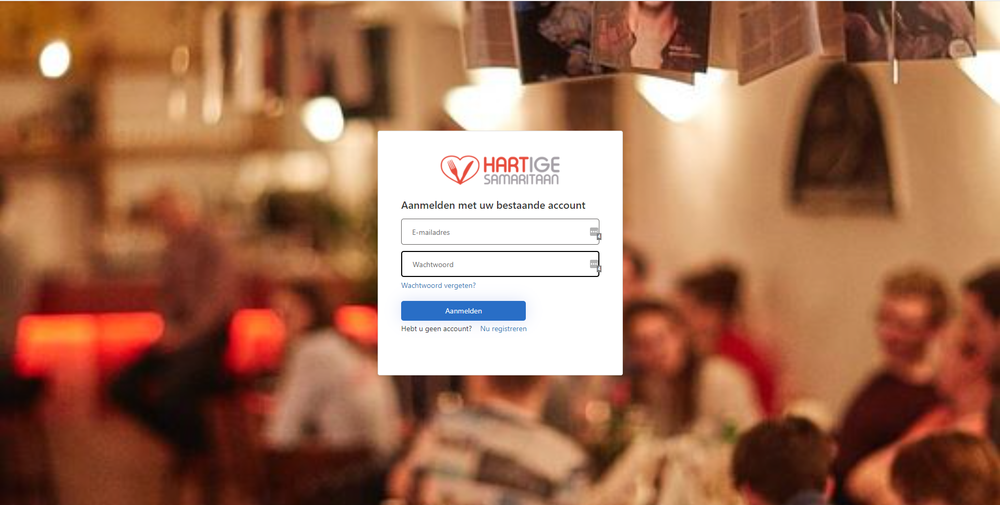
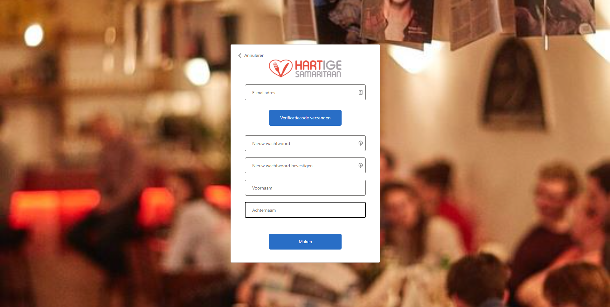
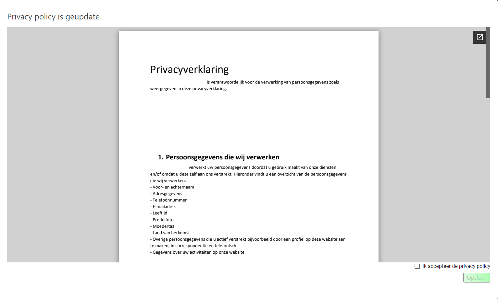
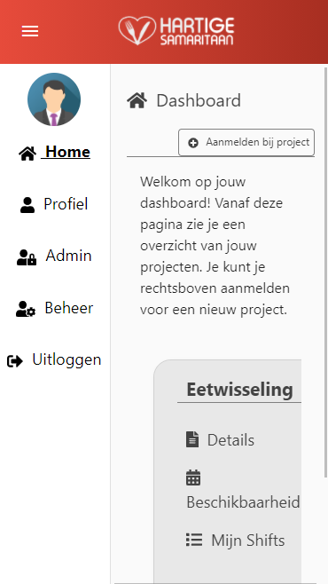
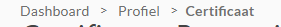

Introduction
The documentation for this application is divided into six parts.
These parts correspond with the six major pages on the website.
On the current page there wil be information about the registration and navigation process.
There will also be information about navigation on the website.
The additional five pages are:
- Dashboard page;
- Profile page;
- Project page;
- Manage page;
- Admin page.
The documentation wil describe these pages from the view of the three different types of users:
- Participant: A volunteer / employee of the stichting Hartige Samaritaan.
- Manager: A person who is responsible for day to day scheduling of shifts in a project.
- Administrator: A member of the board responsible for the setup and maintenance of projects and general data.
Below will follow instructions for the registration and processes as well as instructions on how to navigate the site.
Registration

When a user navigates to the website for the first time, he wil be asked to register himself.
By clicking Register, the user wil be asked to fill in an e-mail address, password, firstname and lastname.*
*The emailadres cannot be changed later.

Before being able to send in the required information, the user needs to verify his e-mail address by clicking the top button verify
e-mail address.
The user will receive a code in his inbox which he is required to fill into the registration form in order to verify his e-mail.
Login
After completing the registration process, the user wil be able to login.
The first time a user logs in, he wil be prompted to read an accept the privacy policy.
After accepting, the user is
redirected to the dashboard page.

Navigating
Using the navigation bar, the user is able to quickly navigate between the main pages.
Depending on his role, the user is shown more or less options to interact with.
Toolbar navigation
Mobile navigation

- Clicking Home wil bring the user to the Dashboard page.
- Clicking profiel wil direct the user to his profile page.
- Clicking Admin (only possible if the user is an administrator) wil lead to the administrator page.
- Clicking Beheer (only possible if the user is an manager or administrator) wil lead to the manage page.
- Clicking Uitloggen wil sign-out the user.
*By clicking on the profile picture icon in either navigation option, the user is able to change or delete his profile picture.
Breadcrumbs
Various pages contain breadcrumbs with which the user is able to quickly navigate back to previously visited pages.
